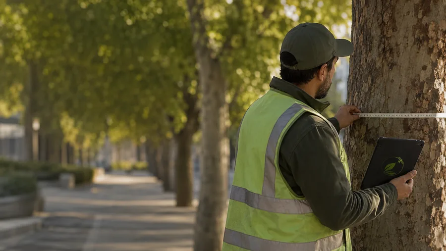

Esta guía explica cómo organizar una evaluación de riesgo del arbolado para municipios, administradores de parques, condominios y responsables de infraestructura urbana. Incluye objetivos, diseño de inventario de árboles, criterios de riesgo, priorización de intervenciones y recomendaciones para seguimiento y comunicación. Se sugiere verificar procedimientos específicos con la documentación técnica disponible y con autoridades competentes.
En resumen
- Definir objetivos y alcance antes de levantar datos evita esfuerzos innecesarios.
- Un inventario estandarizado (ubicación, especie, estado) es la base para evaluar riesgo y priorizar mantenciones.
- Use criterios claros —vigor, estructura, probabilidad de fallo, exposición— para asignar prioridades.
- Priorizar intervenciones por riesgo y valor de uso/inversión optimiza recursos municipales.
- Establezca un plan de seguimiento y comunicación para documentar decisiones y responder reclamos.
1. 1. Definir objetivos y alcance del estudio
1. Definir objetivos y alcance del estudio
Antes de iniciar, clarifique qué busca la evaluación: reducir riesgos públicos, planificar mantenciones, priorizar reemplazos, o justificar inversiones. Defina el área (calles, plazas, parques), la profundidad del muestreo (todos los árboles o muestra representativa) y el horizonte temporal de decisiones. Esto permitirá dimensionar recursos y elegir metodología adecuada.
Recomendación práctica: documente el objetivo en un brief técnico que incluya responsables, plazos y criterios mínimos de entrega. Revise la documentación técnica disponible de autoridades forestales para alinear métodos y terminología.
Punto clave
alcance
2. 2. Recolección de datos e inventario de árboles
2. Recolección de datos e inventario de árboles
Un inventario sistemático es la base. Registre al menos: ubicación georreferenciada, especie, diámetro a la altura del pecho (DAP) o diámetro aproximado, altura o porte, estado fitosanitario, presencia de heridas o podas, y convivencia con infraestructura (cables, veredas, muros).
Use formularios estandarizados y, si es posible, un SIG o aplicación móvil para evitar reingresos de información. El inventario debe permitir filtrar por sectores críticos (hospitales, escuelas, vías principales) para la priorización.
- Considere fotografías y observaciones sobre probables fallas estructurales.
- Capacite a las cuadrillas y registre la calidad del dato (confianza).
Si necesita apoyo técnico, consulte opciones de contratación y nuestros servicios para levantamientos e integración SIG.
Punto clave
inventario
3. 3. Criterios y metodología para la evaluación de riesgo del arbolado
3. Criterios y metodología para la evaluación de riesgo del arbolado
La evaluación de riesgo del arbolado debe combinar observación de campo con criterios reproducibles. Proponga una matriz que contemple:
- Probabilidad de falla: signos estructurales, madera podrida, hendiduras, puntales estructurales comprometidos.
- Consecuencia del fallo: exposición de personas, vehículos, infraestructura crítica.
- Vigor y condición fitosanitaria: defoliación, plagas, hongos.
- Valor de uso y ecosistémico: sombra, captación de agua, patrimonio arbóreo.
Asigne niveles (alto, medio, bajo) y combine probabilidad y consecuencia para generar una escala de prioridad. Documente criterios y ejemplos para que las evaluaciones sean consistentes entre distintos inspectores.
Nota: adapte la metodología a condiciones locales —especies, clima, normativa municipal— y revise la bibliografía técnica disponible en organismos competentes antes de formalizar procesos.
Punto clave
metodologia
4. 4. Priorización y planificación de mantención
4. Priorización y planificación de mantención
Con la escala de riesgo obtendrá una lista priorizada. Para cada árbol o grupo priorizado, defina intervenciones posibles: inspección detallada por especialista, poda correctiva, anclajes, o remoción y reemplazo. Estime recursos y establezca ventanas temporales según el nivel de riesgo.
Organice las acciones en un plan operativo que incluya:
- Órdenes de trabajo con código de prioridad.
- Presupuesto estimado y responsable técnico.
- Protocolos de seguridad y señalización.
Priorice intervenciones en sectores de alta exposición (escuelas, consultorios, vías principales). Evite decisiones únicas basadas solo en la edad o tamaño; combine criterios técnicos y valor social.
Punto clave
priorizacion
5. 5. Implementación, seguimiento y comunicación
5. Implementación, seguimiento y comunicación
Implemente un registro de acciones y un calendario de revisiones. Registre trabajos realizados, observaciones post-intervención y fechas de próxima inspección. Un sistema de gestión permitirá generar reportes para rendición de cuentas y para programar inversiones futuras.
Comunique decisiones relevantes a la comunidad con transparencia: motivos técnicos, alternativas consideradas y plazos. Disponga canales para recibir reclamos o solicitudes y responda con la evidencia registrada.
Si requiere asesoría para implementar sistemas de gestión y protocolos de inspección, puede escribir a nuestro equipo para evaluar apoyo técnico.
Punto clave
implementacion
En DPZ Consulting abordamos la censo y caracterización de arbolado urbano como un servicio acotado, con producto, plazo y alcance definidos.
Fuentes y referencias
Revisamos estas fuentes oficiales para preparar este contenido. La normativa puede actualizarse; verifica siempre el caso concreto antes de ejecutar un proyecto.
Preguntas frecuentes
¿Con qué frecuencia se debe realizar una evaluación de riesgo del arbolado?
La frecuencia depende del contexto: árboles en vías de alto tránsito o con historial de fallas requieren revisiones más frecuentes que áreas de bajo uso. Recomendamos establecer inspecciones periódicas y revisiones extra ante eventos climáticos extremos. Defina frecuencias en función del resultado de la evaluación inicial y del nivel de prioridad asignado.
¿Necesito un arborista certificado para todas las inspecciones?
Para un inventario básico y detección de signos visibles, personal capacitado puede realizar el trabajo. Sin embargo, para árboles con riesgo alto o intervenciones complejas, es aconsejable la evaluación de un especialista con experiencia en diagnóstico estructural. Documente criterios que determinan cuándo escalar a especialista.
¿Cómo se integran datos del inventario en la gestión municipal?
Integre el inventario en un SIG o base de datos donde cada árbol tenga ficha única, historial de mantenciones y prioridad. Esto facilita programación de órdenes de trabajo, presupuestos y reportes. Si su municipio no dispone de herramientas, considere contratar soporte técnico para integración y capacitación del personal; revise la documentación técnica disponible y adapte las plantillas a su realidad.